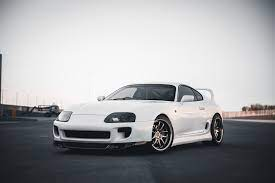
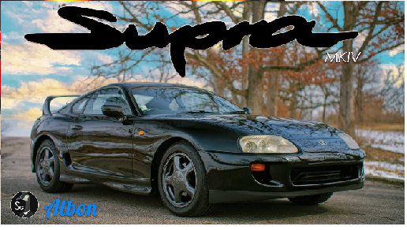
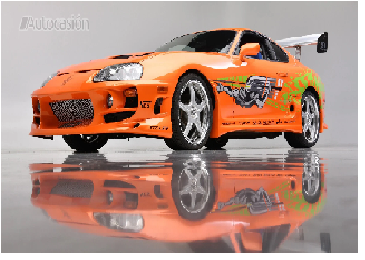
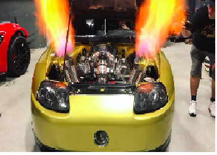
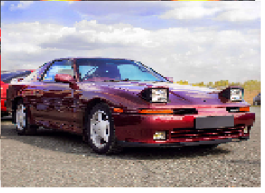

toyota supra




Aceleración 0-100 km/h: 4.2 segundos Tipos de carrocerías: Coupe Configuración de cilindros: Motor en línea Dimensiones: 4,379 mm L x 1,854 mm A x 1,299 mm A Puertas: 2 Tren motriz: Tracción trasera
